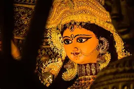

DURGA PUJA

Here are 5 important points about Durga Puja:
- Durga Puja celebrates Goddess Durga’s victory over Mahishasura, symbolizing the triumph of good over evil.
- It is a major Hindu festival, especially celebrated with great joy in West Bengal.
- Beautiful idols of Goddess Durga are worshipped in decorated pandals for several days.
- People wear new clothes, perform rituals, and enjoy music, dance, and cultural programs.
- The festival ends with immersion of idols, spreading joy, devotion, and unity among people.